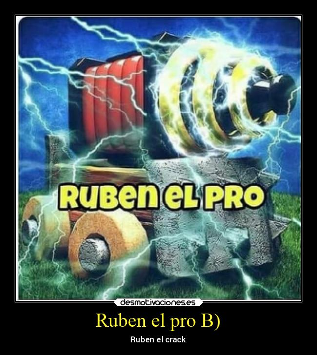

Isaac
Isaac es un RUBEN muy destacado por su habilidad al dibujar y hacer animaciones 2D, generalmente sobre Dragon Ball Z.
Proyectos destacados


Bienvenido a la web de RUBEN EL PRO.
Isaac es un RUBEN muy destacado por su habilidad al dibujar y hacer animaciones 2D, generalmente sobre Dragon Ball Z.
Bairon es una persona habilidosa en cualquier ámbito que se propnga, ¿Minecraft, Osu, Geometry Dash? Pues es un pro.
Locotaso, persona muy creativa que entiende lo que el grupo y la comunidad de RUBEN necesita.
Si necesitas evadir impuestos, el va a estar.
Juan es la persona mas amable y luchadora del grupo, siempre se esfuerza en tratar de que todos nos sintamos comodos. Además de ser el mejor jugador de Brawl de la comunidad.
Juega Geometry Dash.